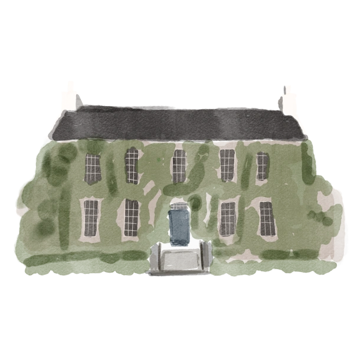
Our Story
Ashley
Eoin

Please enter the password to view our wedding website
Incorrect password — try again
Ballintubbert
Gardens & House
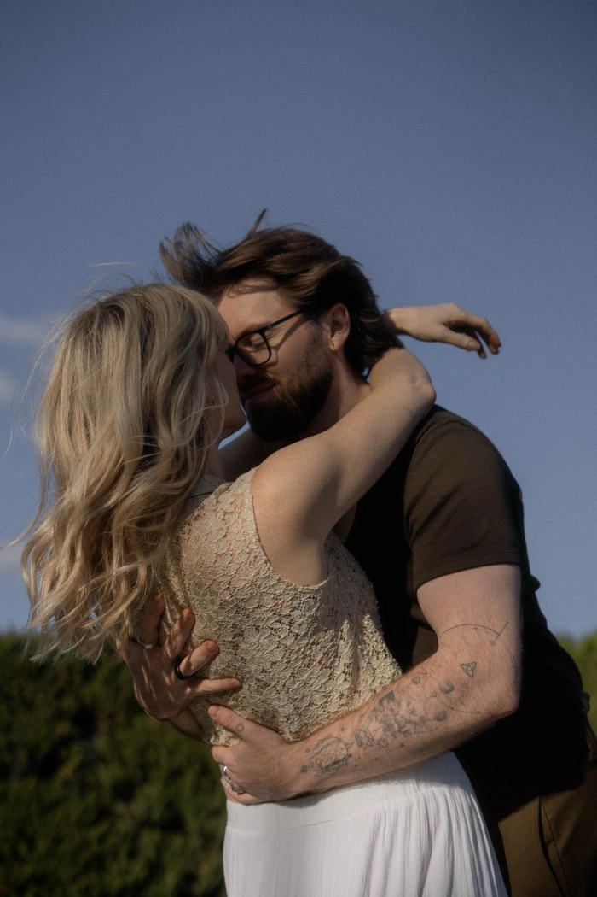
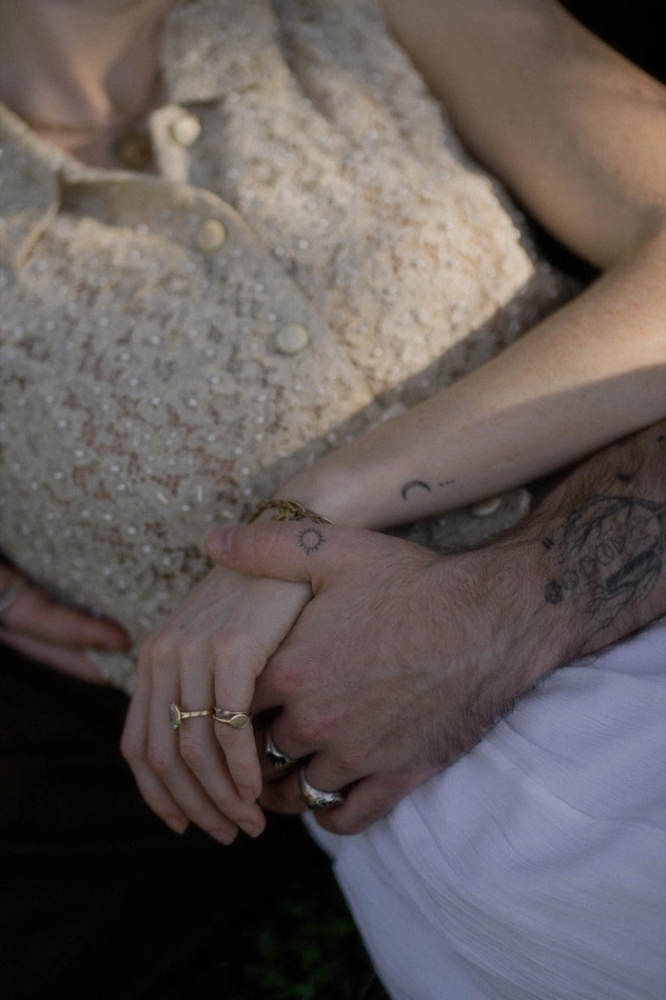
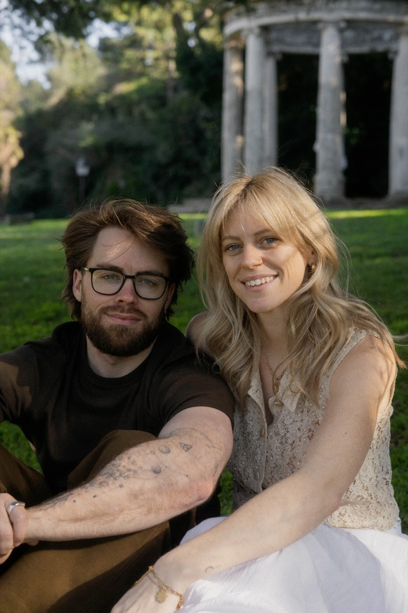
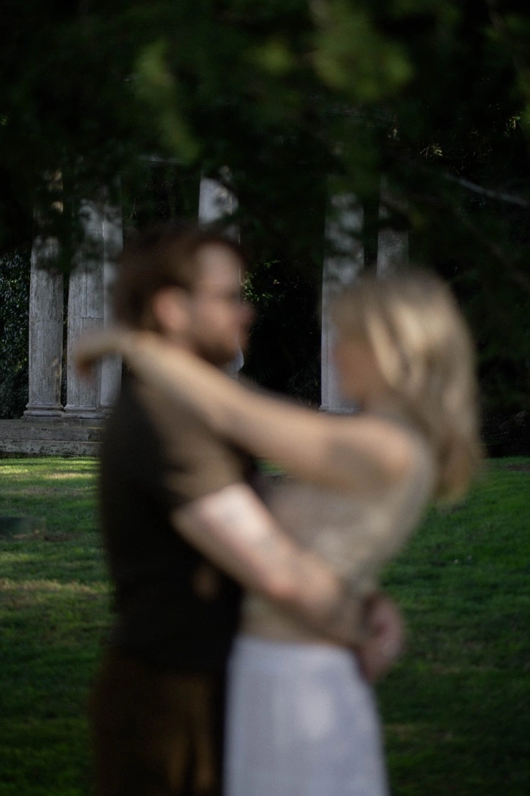
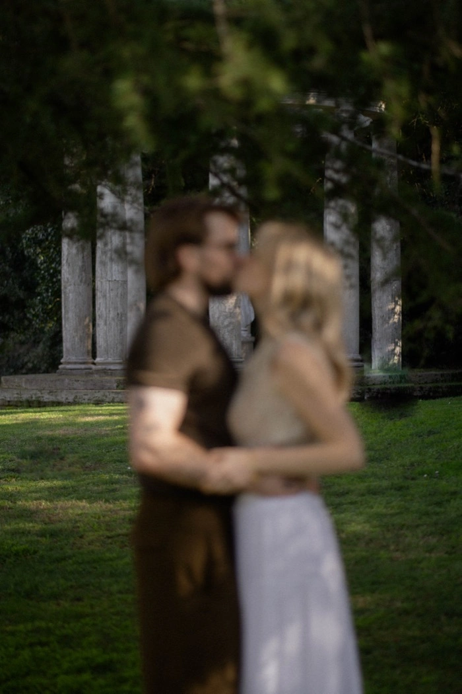
Wedding Weekend
Aug 20–22, 2026
Together with our families, we, Ashley and Eoin joyfully invite you to celebrate our union of marriage.
As we count down the days until our wedding, we’ve gathered everything you need to plan your magical getaway to the place we’ll soon call home.
Ashley
Eoin
What begins with a welcome in Dublin unfolds into three unforgettable days at Ballintubbert Gardens & House, County Laois. Below, you’ll find the details for each celebration — when to arrive, what to wear, and everything in between.
The Irish may be known for their goodbyes but just wait until you experience their warm welcomes. Whether you're traveling from near or far, we'd love to kick off the wedding weekend with a bit of craic. Join us for welcome pints, live music, and meet friends and family you'll be spending the weekend with.
Everyone! We know you all have different travel schedules, so please don't feel any pressure to attend. But if you find yourself in town early, we'd love to see you and toast to the start of a beautiful weekend together.
Drinks and live music at Keogh's
Keogh's | 9 Anne St S, Dublin, D02 NY88
Meet us for a cozy night in the country at The Fisherman's Thatched Inn, a charming 300-year-old thatched-roof pub and proud stop along Ireland's Whiskey Trail. The quiet road it sits on follows the route St Patrick is said to have traveled back in 450 A.D. This night marks the official start of our wedding weekend, and we can't wait to share it with you!
Everyone is welcome! Little ones included.
Transportation to and from will be provided. The shuttle bus will pick-up and drop-off at the wedding venue and in Portlaoise town center (at Midlands Park Hotel).
The Fisherman's Thatched Inn | Fisherstown, Ballybrittas, Co. Laois, R32 CR22
Friday, August 21st
The heart of
our story
unfolds here
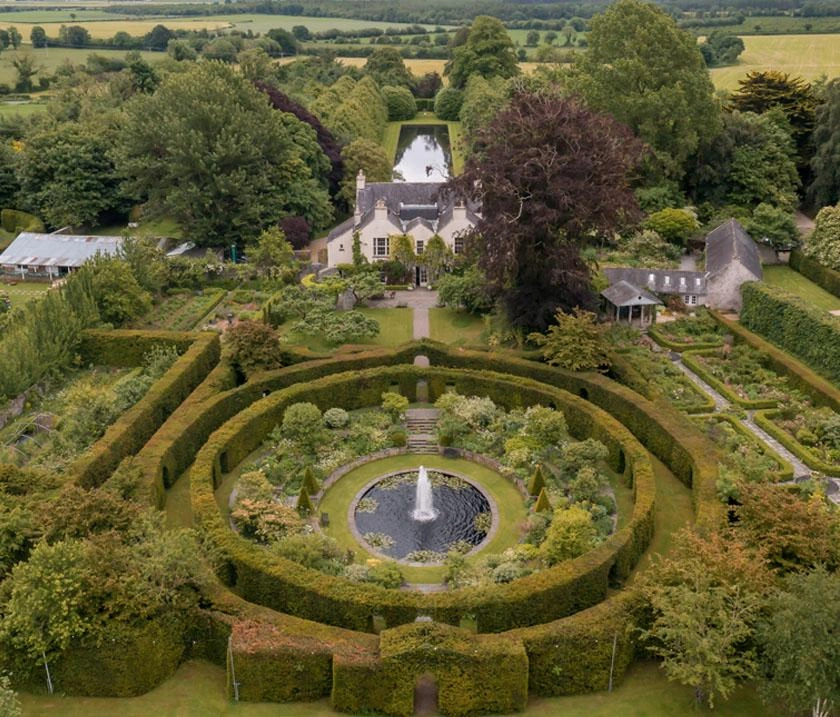
Ballintubbert Gardens & House is a historic Georgian estate set on 14 acres of enchanting formal gardens in County Laois, Ireland. On August 21st, we'll gather in the Fountain Gardens to exchange our vows — surrounded by century-old hedgerows and everyone we love most.
Attire — "Formal Garden Elegance"
Think dressed up, not buttoned up for our elegant garden evening inspired by the Irish countryside. Flowing fabrics, florals, and color are welcome — midi or longer dresses, breezy silhouettes, or elegant separates work beautifully. For men, suits, blazers, or dress shirts in light fabrics like linen or cotton are perfect; ties optional. Shoes suitable for grass are recommended. Please avoid white or ivory. This is just a guide — please dress in whatever feels most like you.
Sample attire on Pinterest: pinterest.com/ashleyweinaug

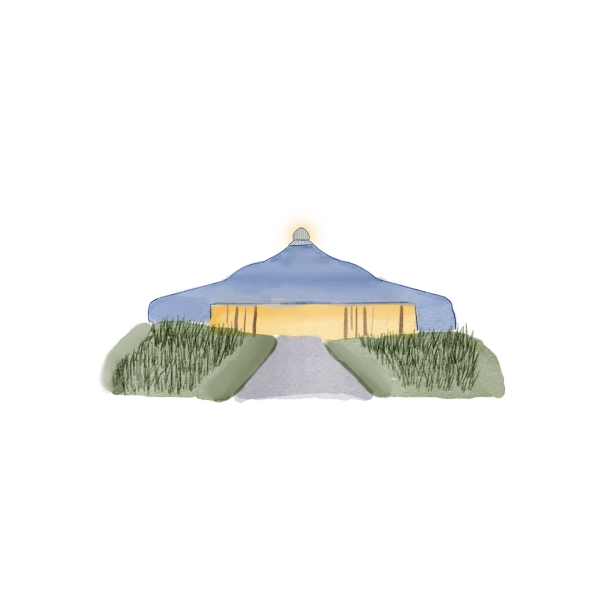
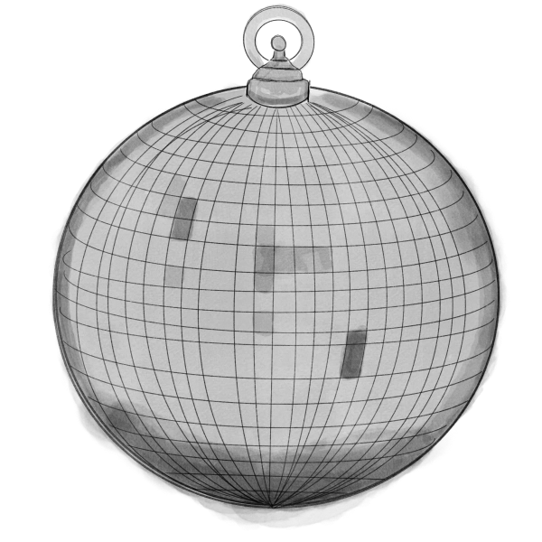
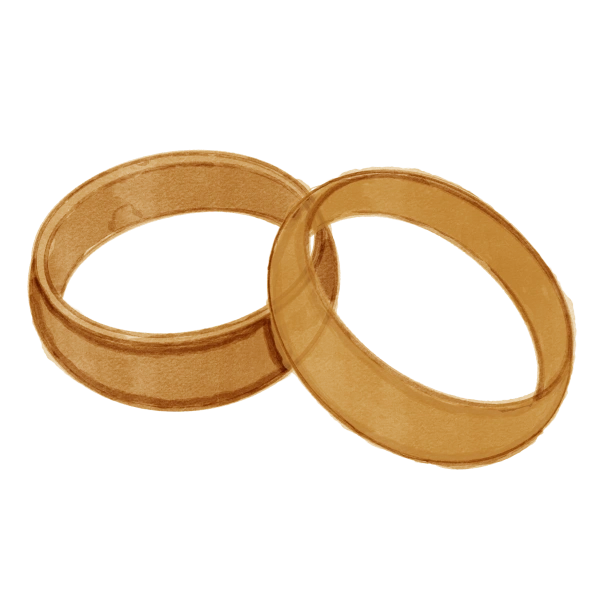
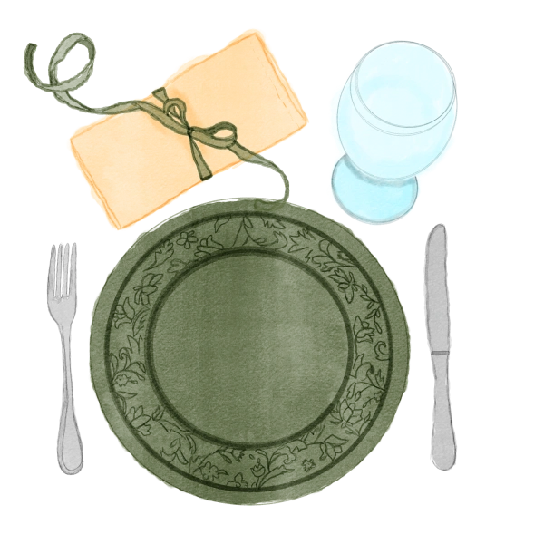
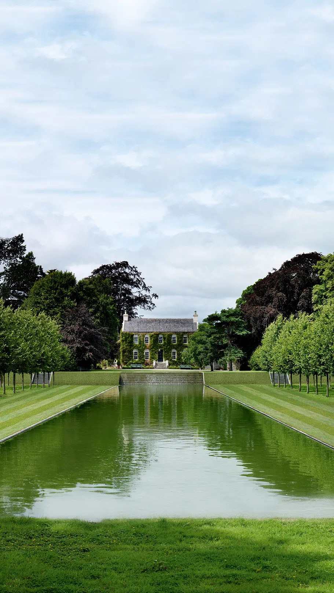
The Venue
The heart of our story unfolds at the stunning Ballintubbert Gardens & House, a historic Georgian estate set on 14 acres of enchanting gardens and sweeping grounds. Once home to celebrated figures such as poet Cecil Day-Lewis and actors Sebastian Shaw and Sir John Hurt, the estate sits on land sacred since Druidic times with a mineral-rich well where people have journeyed for its healing waters for generations.
At the Fountain Gardens, we will exchange our vows, hopefully under the warm Irish sun, before an evening filled with love, music, and celebration with all of you.
Location
Ballintubbert House, Ballintubbert, Stradbally, Co. Laois, R14 E954, Ireland
Stick around and recover with a fun day at the estate as we celebrate married life together with a classic American BBQ. We'll have food, drinks, music, lawn games and will soak up the last moments of our time all together.
Everyone's invited to join if you're still around and up for another day together. It's completely optional, as we know many guests may have travel plans.
Arrive whenever you're ready, we'll be there all afternoon.
Kick back in your best cowboy boots, hats, denim, and plaid! Think casual, fun and a little bit country — totally optional, so come as you feel most comfortable.
Ballintubbert House, Ballintubbert, Stradbally, Co. Laois, R14 E954, Ireland
Ballintubbert Gardens & House is nestled in the countryside of County Laois, approximately one hour from Dublin by car or train. It’s easily accessible for guests coming from the city or surrounding areas.
From Dublin via Car:
From Dublin via Train:
For guests wishing to make a weekend of it, there are a range of lovely accommodation options nearby. Alternatively, guests are very welcome to stay in Dublin and enjoy a scenic drive down for the celebration. We recommend arranging car sharing or taxis for convenience and to ensure everyone can fully enjoy the day. Please don’t drink and drive.
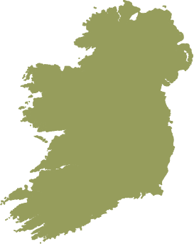
Accommodation options depend on how you’d like to spend the weekend. You can stay in Dublin or choose accommodation in nearby towns and villages. Please don’t drink and drive—the legal limit is lower than in the United States. Cabs are available!
Near the Venue
Ideal for those who want a short taxi ride home. Nearby towns include Athy, Portlaoise, Abbeyleix, Kildare, and Carlow.
| Homes & B&B’s | Drive | Price | Guests |
|---|---|---|---|
| Willsgrove House | 13 min | $98 / €90 | B&B |
| The Farm Cottage | 15 min | $509 / €469 | 5 |
| Blackhill Woods Retreat | 28 min | $186 / €171 | B&B |
| Coolanowle | 13 min | $185 / €170 | B&B |
| Hotels | Drive | Price |
|---|---|---|
| Killeshin Hotel | 19 min | $162 / €149 |
| Midlands Park Hotel (5 min walk from train station) | 21 min | $197 / €181 |
Dublin City Break
Approximately one hour drive. Perfect if you are extending your trip for some sightseeing and prefer to stay in the city.
| Hotel | Price |
|---|---|
| The Hoxton | $405 / €373 |
| Anantara The Marker | $459 / €422 |
| Number 31 | $478 / €440 |
| Stauntons on the Green | $508 / €467 |
| Zanzibar Locke | $520 / €478 |
| The Shelbourne | $1,074 / €988 |
For those staying in Dublin on Wednesday night ahead of the wedding festivities, the bride and groom will be staying at Stauntons on the Green. Room prices range from $273 / €251 to $327 / €301. You are welcome to join us!
Whether you’re arriving a few days early or extending your trip, County Laois and the surrounding midlands have plenty to offer. Here are some of our favourite spots near the venue.
Ballyadams Castle — A historic 14th-century castle ruin surrounded by scenic countryside, perfect for a short visit or photos.
Abbeyleix Heritage House — Local heritage museum with exhibits on community history.
Aghaboe Abbey — Historic abbey ruins with atmospheric charm.
Sham Castle & Gothic Ruins — Historic ruins set in woodland, offering a quiet spot to explore and enjoy the scenery.
White Castle — A historic castle/tower house in the centre of Athy, originally built in the early 15th century.
Ballaghmore Castle — Small medieval castle in the village of Ballaghmore.
Cullahill Castle — Ruined castles set in scenic countryside for a quieter exploration.
Rock of Dunamase — Spectacular hilltop medieval fortress with breathtaking views over the midlands — perfect for photos and a short adventure.
Emo Court House — Stunning neo-classical estate with gardens and walking trails to explore.
Morett Castle — Historic 16th-century castle ruins with atmospheric views and medieval intrigue.
Donaghmore Workhouse & Agricultural Museum — Fascinating insight into Irish social history.
Timahoe Heritage Centre & Round Tower — A 12th-century round tower and small museum in the quaint village of Timahoe.
Abbeyleix Bog Project — A beautiful community-run peatland nature reserve with boardwalk trails, wildlife spotting, and peaceful walks through restored bogland.
Glenbarrow Car Park — Gateway to walks in Glenbarrow Woods and trails in the Slieve Bloom foothills — great for longer hikes or scenic picnics.
Cathole Falls — Pretty waterfall setting ideal for nature lovers and photographers.
Togher Woods — Peaceful woodland walk perfect for a morning stroll.
Heywood Gardens — Beautiful Lutyens-inspired gardens and woodland walks.
Stradbally Woodland Railway — Scenic steam/tourist railway near Stradbally town. Ireland’s first volunteer heritage railway, operating since 1969.
Lisduff Adventure Farm — Family-friendly farm with animals and outdoor play. Seasonal.
Maize Maze — Dealgrove Farm — Seasonal maize maze and farm fun (check opening times).
Ballykilcavan Brewery — Award-winning craft brewery with tours and tastings — ideal for adults who appreciate a quality pint.
Kildare Village: Luxury Shopping Outlets — A popular open-air shopping destination with over 100 boutiques offering designer and lifestyle brands, cafes and restaurants.
We kindly ask you to please stick to the names listed on your invitation. That means no unexpected plus ones.
We kindly request that our wedding be an adults-only celebration. Only guests listed on the invitation are invited, unless otherwise noted directly to you. Thank you for understanding, and we hope this gives you the chance to truly relax and celebrate with us.
Please let us know when sharing your RSVP. We are happy to accommodate to ensure everyone has a happy (and delicious) experience.
Renting a car is the easiest way to get there and get around during your stay. You do not need an international driver’s license to drive in Ireland. Your valid U.S. driver’s license is accepted — just remember that in Ireland people drive on the left side of the road.
If you’re traveling by public transport, you can take the Irish Rail train from Dublin to Portlaoise. We recommend staying at the Midlands Park Hotel, which is a 5-minute walk from the station and centrally located, with bars and restaurants nearby. Please note that the wedding venue is a 20-minute drive from the town, so you’ll need to arrange transport to and from the wedding. Taxis and Ubers are available, but they can be expensive, especially if you’re traveling longer distances. Carpooling is recommended too.
Laois Taxi 24 Hour – 089 98 555 35 (Whatsapp) | Tipp’s Taxis – 059 914 7070 | Paul’s Cabs – 086 256 5736 | Val’s Cabs – 087 704 0245 | Uber and FreeNow rideshare apps also exist!
Yes! On-site parking will be available, but we absolutely recommend carpooling or taxis if you are staying nearby.
To put it simply: unpredictable. Ireland is known for experiencing all four seasons within one day, but we are hoping for a sunny weekend! We plan to have the wedding outdoors in the garden, but of course have a backup plan if needed.
We’d love for everyone to be rooted with us in the present moment, so we kindly ask for no phones and cameras during the ceremony. Outside of this moment, grab all the content you’d like! We’ll have a live album at the following link and would love for you to download the app to upload your photos.
That is completely up to you! We’d love to have all of our friends and family with us for everything, but completely understand if you can only join us for part of the weekend.
We know many of you are traveling from afar, and we are so grateful. Your presence is the greatest gift of all! If you’d like to give us a gift as we begin this next chapter and lay roots in Ireland and embark on our honeymoon, we’ve included details here on contributing to our newlywed fund.
Revolut
Beneficiary: Eoin Bolger
IBAN: IE98 REVO 9903 6034 0005 76
BIC: REVOIE23
Zelle
ashley.weinaug@gmail.com
Cash
For guests who prefer, cash gifts can be brought along to the wedding.